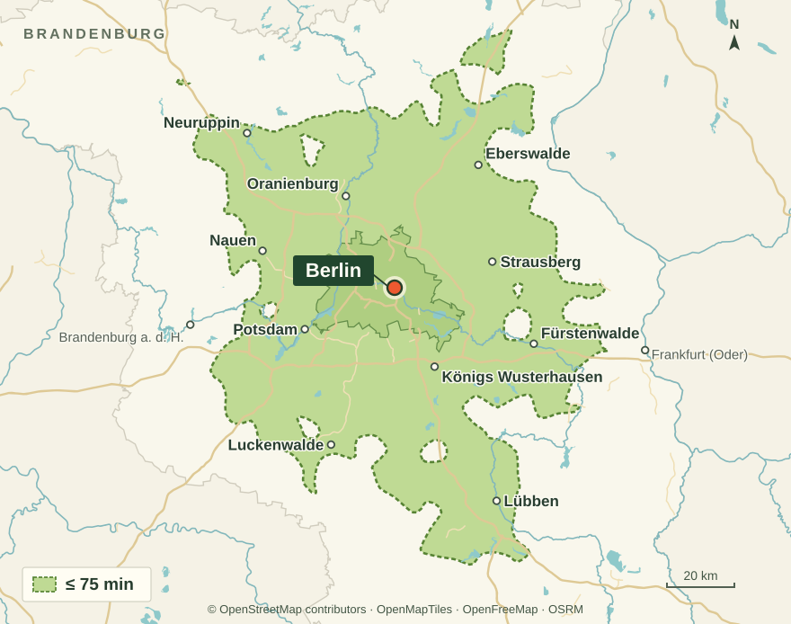

The setting
Offices
Between meetings, a short break may leave too little time to reach a lunch spot.
How the machine fits
Teams can choose and heat a meal in the break room, including after the canteen’s final service.
Discuss this siteBerlin · Brandenburg
A food machine for an early shift in Großbeeren serves a different need from a meal station for late arrivals at a Berlin hotel. Explore what would work at your site.
Location solutions
Choose your type of location.
The setting
Between meetings, a short break may leave too little time to reach a lunch spot.
How the machine fits
Teams can choose and heat a meal in the break room, including after the canteen’s final service.
Discuss this siteThe setting
After a late shift or a long study session, shops may be closed and the shared kitchen busy.
How the machine fits
A machine by the lobby or common room lets residents eat a hot meal immediately or take a chilled portion back to their room.
Discuss this siteThe setting
Travellers wait for connections or stop for a break late at night, often after nearby food outlets close.
How the machine fits
A visible spot near the waiting area keeps a full meal within reach. Travellers can choose hot or chilled before their journey continues.
Discuss this siteThe setting
Guests arriving after the kitchen closes often ask reception where they can find hot food.
How the machine fits
Reception can direct guests to the machine in the lobby. Late arrivals can pick a meal even when the kitchen has closed for the evening.
Discuss this siteThe setting
Early, late and night shifts take breaks at different times. One lunch service reaches only part of the workforce.
How the machine fits
A machine in a shared break area can serve several shifts. Staffing levels and break times help us plan replenishment.
Discuss this siteThe setting
After a late workout, some members want a full meal when nearby kitchens have already closed.
How the machine fits
By the training area or exit, members can pick up a chicken-and-rice dish or a curry, including during late opening hours.
Discuss this siteOur service area
We assess sites within roughly 75 minutes by car from Warschauer Straße 59A in Berlin-Friedrichshain.
The green area is estimated from road routes without live traffic. Send us your address for an assessment.
Ask about your address